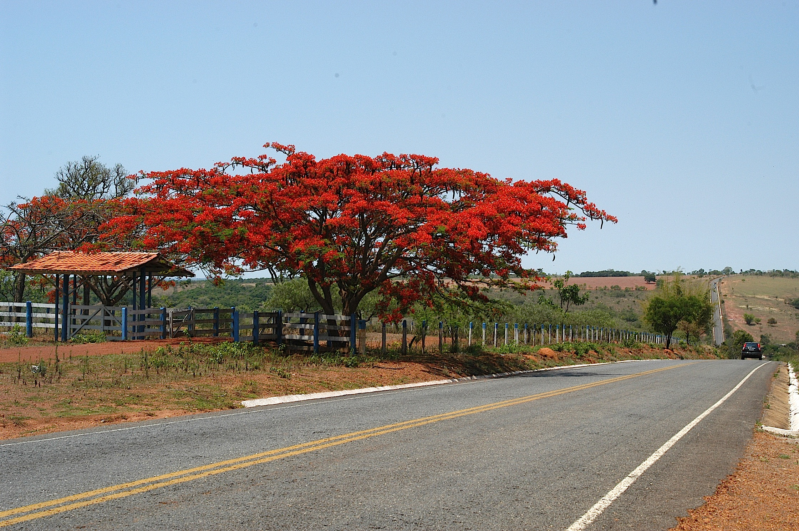
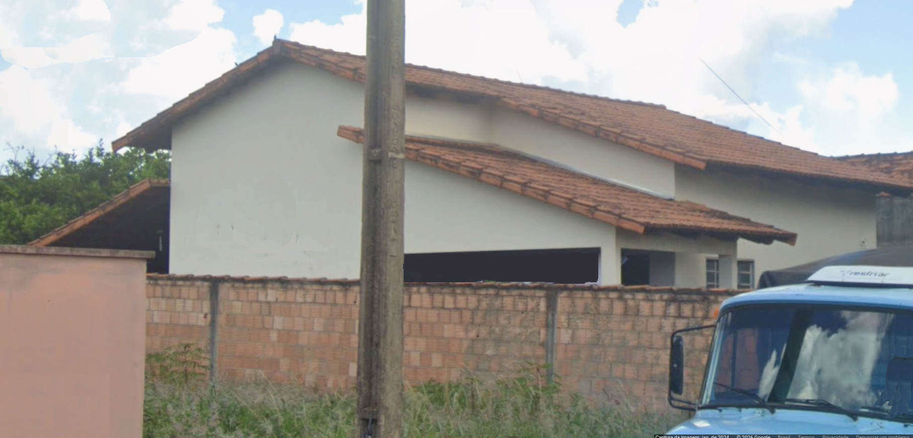
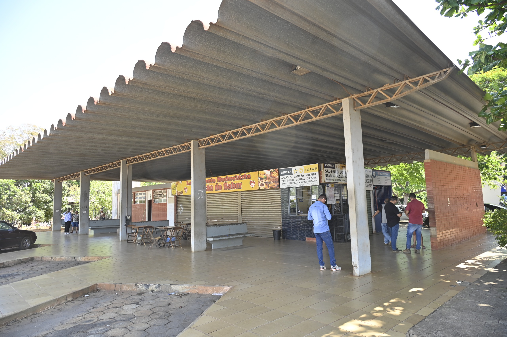
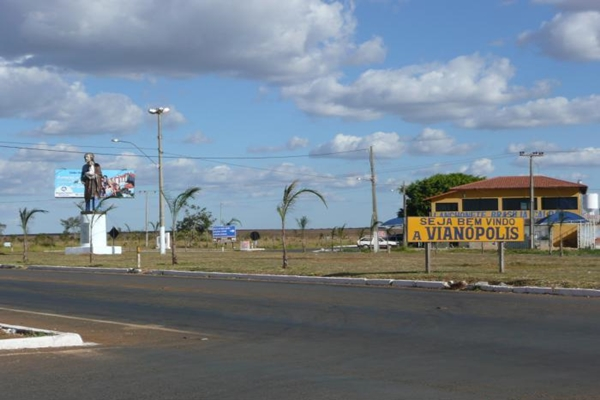
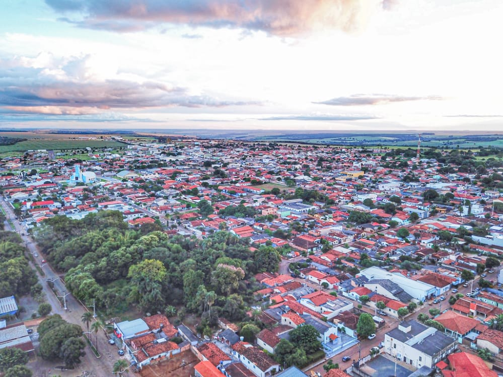
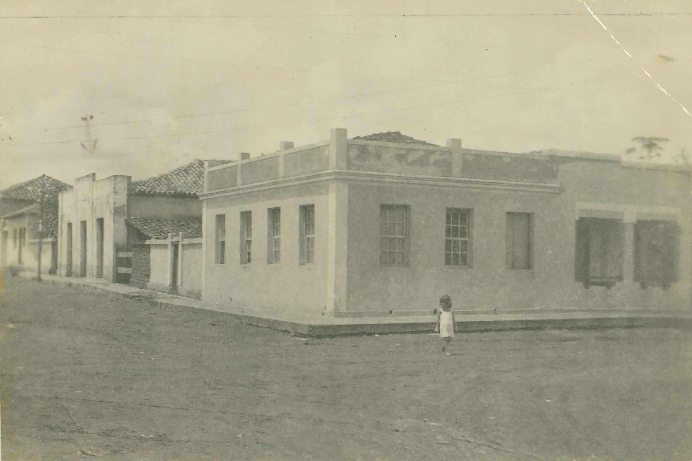
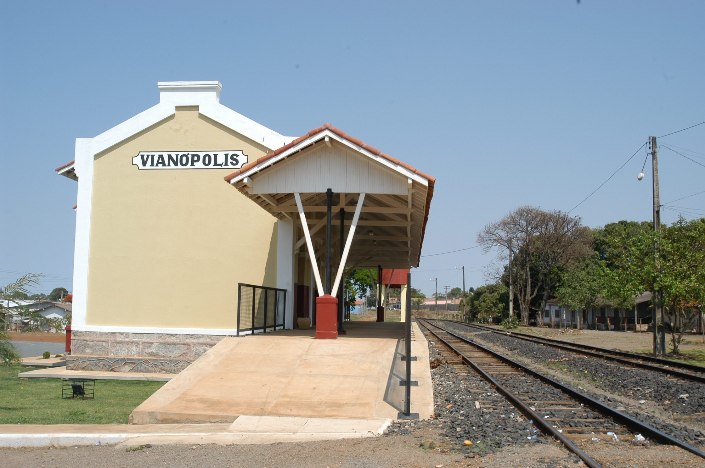
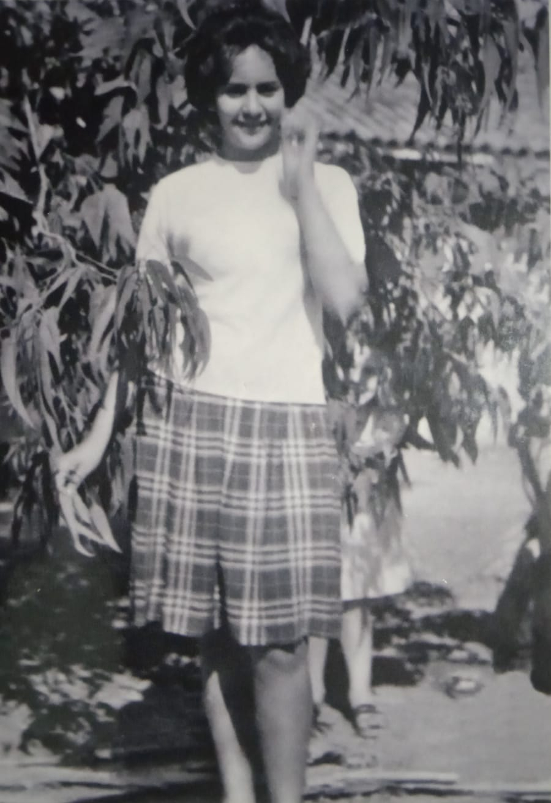
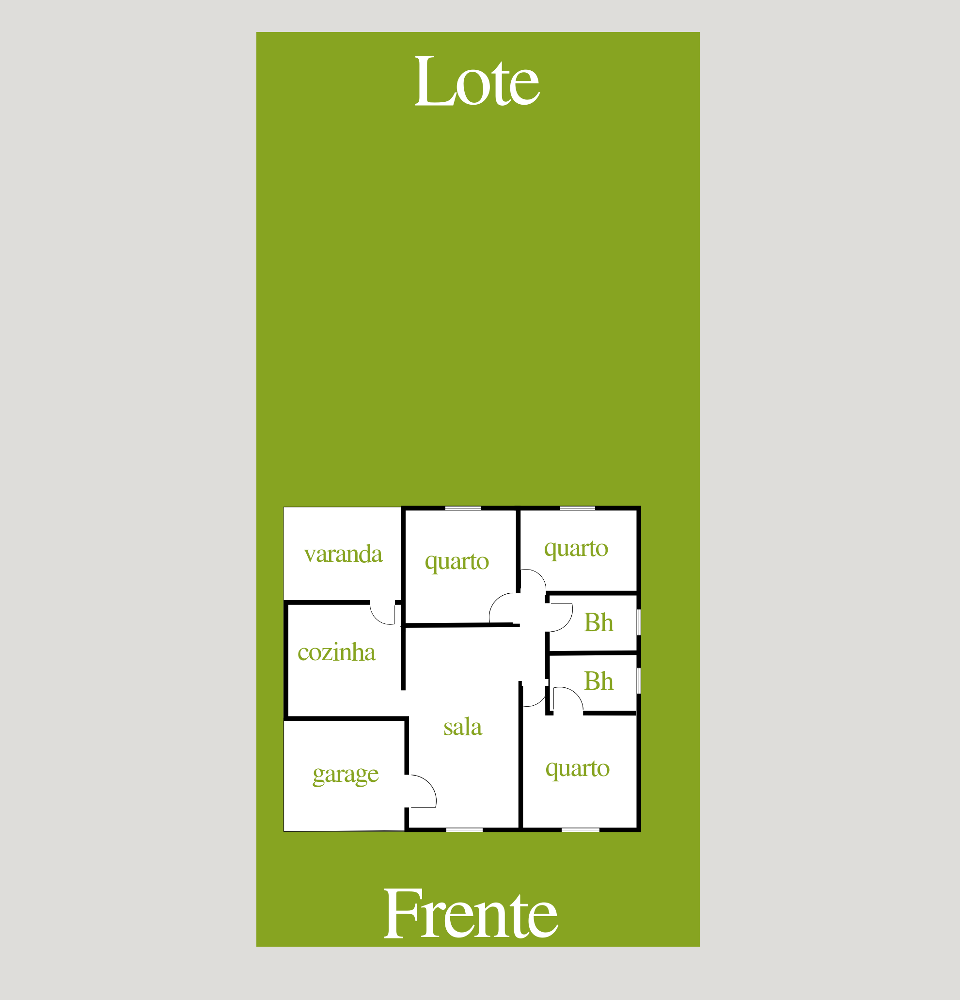
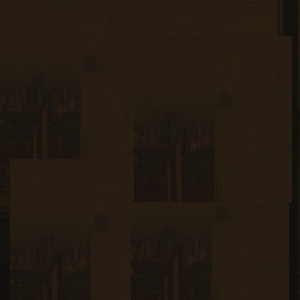

O vento que sobrava em Vianópolis sempre trouxe consigo um perfume de terra molhada, misturado ao doce do canavial que crescia nos fundos da chácara de Dona Nega. Para a jovem Emily — que o mundo conhecia também como Maria Amélia —, aquele aroma era a definição exata de lar. Nascida na vizinha Silvânia, Emily cresceu em uma pequena cidade do interior goiano que transbordava uma energia mágica. Ali, enquanto muitos jovens olhavam para as estrelas tentando decifrar o futuro, Emily usava sua inteligência aguçada e sua alegria contagiante para construir o seu próprio destino, alimentada pelo desejo profundo de ser feliz e viver intensamente.
A velha chácara de sua infância era um reino de simplicidade e riqueza inigualável, cercada por um imenso e forte muro de adobe. Na cozinha, o fogão a lenha parecia conversar com o forno, operando milagres sob as mãos prendadas de Dona Nega, que sustentava a casa com o aluguel da casa vizinha, seus crochês, bolos e o famoso sabão de bola preta. Enquanto o quintal brilhava com seus abacateiros, mangueiras e limoeiros, Emily guardava na mente cada detalhe daquele refúgio que parecia saído das páginas do Sítio do Picapau Amarelo.
Mas o mundo era grande demais para aquela jovem de dons extraordinários.
A vida de Emily mudou de rumo quando ela foi trabalhar com uma família de americanos. O carinho foi tanto que ela logo se tornou parte da família, e sua mente brilhante fez com que ela dominasse a língua inglesa num estalar de dedos. Emily cresceu, casou-se e deu vida a quatro tesouros: Cláudia, Ricardo, Henrique e Sandra.
Sua paixão pelo idioma a levou a se graduar e se especializar em Anápolis e Goiânia. Emily transformou-se em uma professora admirada, espalhando o conhecimento para tantos outros jovens de Vianópolis. Anos mais tarde, o destino a levou a cruzar oceanos. Emily viveu nos Estados Unidos, conquistou a naturalização e tornou-se cidadã americana. No entanto, nem os arranha-céus e nem as terras estrangeiras conseguiram apagar as cores do cerrado de sua memória. A saudade de sua mãe, de seus irmãos e do chão onde correu descalça falou mais alto. Era hora de voltar para casa.
De volta a Vianópolis, Emily não queria apenas regressar; ela queria fincar suas conquistas na terra que a viu crescer. Comprou alguns lotes na cidade e, em um deles, começou a desenhar, linha por linha, o seu grande sonho: a sua casa ideal. Cada tijolo erguido carregava o peso de sua história, o suor de seus estudos no exterior e o toque inconfundível de uma grande vitória.
A casa nasceu belíssima, exatamente como ela havia projetado em seus pensamentos mais generosos:
Se a casa era o monumento de sua vitória, o grande quintal era o palco onde o passado e o futuro se abraçavam. Olhando para a terra preta e fértil dos fundos, Emily não via apenas um terreno vazio, mas sim a continuação da chácara de Dona Nega.
Ali, com as próprias mãos, ela começou a desenhar o seu pomar e o seu jardim encantado. A cada nova muda de árvore frutífera plantada e a cada flor que desabrochava, Emily revivia a infância, honrando a força de sua mãe — que a essa altura já lia e escrevia com o neto Henrique. Sob o céu azul de Goiás, na varanda de sua casa dos sonhos, Emily (Maria Amélia) finalmente sorriu, sabendo que tinha viajado o mundo inteiro apenas para descobrir que o lugar mais feliz do universo era aquele que ela mesma havia reconstruído em suas origens.
Dê o play e emocione-se com as memórias de Vianópolis e a conquista da Casa do Sonho







Antes de se tornar município, a região ficou conhecida como “Pouso do Carreiro” por ser o ponto de parada dos boiadeiros e tropeiros. Era também chamada de “Cabeceira da Vereda”, devido ao córrego do mesmo nome. Mais tarde, o lugar passou a ser chamado de “Estação Tavares”, que recebeu essa denominação em homenagem à família Tavares, que na época era dona das terras onde começou a cidade. Foi aí que o coronel Felismino de Souza Viana logo adquiriu dois alqueires da área e deu início à formação da cidade.
O nome Vianópolis é em homenagem ao fundador.
A ESTAÇÃO: A estação de Vianópolis foi inaugurada em 1924.
Em 1930, uma antropologista da Universidade da California, Elizabeth Steen, veio sozinha para o Brasil para passar quase um ano estudando in loco os indígenas dos Estados de Goiás e de Mato Grosso. Em entrevista para a revista O Cruzeiro, de 27/12/1930, Elizabeth contou que chegou no país pelo Rio de Janeiro e de lá foi a São Paulo; ali tomou o trem (pela Mogiana, provavelmente) até a estação de Vianópolis, em Goiás, e, de lá, "em auto-caminhão, por estradas difíceis de percorrer, foi à capital do Estado" (na época, Goiás Velho) e depois "às margens do Araguaia, para descer o rio em batelão e semanas depois, estava na ilha do Bananal, no Posto de Santa Isabel, em plena região dos índios carajás".
"Antigamente a estação tinha o nome de Tavares, em homenagem à fazenda de mesmo nome, de Felismino de Souza Viana que, juntamente com o empresário Levy Fróes, construiu, um ano depois de inaugurada a estação, a mais possante usina hidrelétrica do estado de Goiás na época. Anos mais tarde, a estação recebeu o nome de Vianópolis em homenagem ao dono da fazenda Tavares. Depois de inaugurada esta estação, a ferrovia enfrentou muitos problemas financeiros e políticos, permanecendo a cidade como ponta de linha por um período de seis anos, o que, aliada à eletricidade, trouxe considerável desenvolvimento à localidade, na época pertencente a Bonfim, atual Silvânia. A estação está conservada, sendo utilizada por várias repartições públicas como 'Agrodefesa de Goiás', 'Junta do Serviço Militar', 'Banco do Povo' e a Secretaria Municipal do Meio Ambiente. Ainda dispõe de duas caixas d'água de metal, casa do chefe de estação, algumas casas de funcionários e um antigo alojamento que hoje funciona como sede de uma cooperativa de costureiras" (Glaucio H. Chaves, 02/2009).
É curioso saber que, durante a construção de Brasília, na segunda metade dos anos 1950, o melhor transporte para quem ia do sul do País para Brasilia era pelo trem, descendo em Vianópolis e tomando um ônibus que estava sempre à disposição nos horários de chegada do trem à estação.
HISTORICO DA LINHA: A linha-tronco da E. F. Goiaz foi aberta a partir de Araguari, onde já estavam os trilhos da Mogiana desde o ano de 1896, em seu primeiro trecho in 1911, até a ponte sobre o rio Paranaíba, na divisa entre os Estados de Minas Gerais e Goiás. A partir de então, foi aquela demora de sempre: avançando lentamente, atingiu Goiânia, capital do Estado de Goiás desde o início dos anos 1940, somente em 1950, e alguns anos mais tarde a linha foi prolongada em dois quilômetros até Campinas de Goiás. Aí parou. Com a entrada em operação da linha para Brasilia, a partir da estação de Roncador, o trecho até Goiânia perdeu em importância. Hoje boa parte da linha está em operação para trens cargueiros: trens de passageiros acabaram nos anos 1980.
Prefixo: EVI Coordenadas: 16°44'31.99"S 48°30'51.83"W. Em 2005, a estação estava servindo como Banco do Povo. Em julho de 2023, estava sendo recuperada novamente pela VLI.
| Localização: | Vianópolis - GO |
| Endereço: | Blazi - Rua Elvina |
| Tipo: | Casa Residencial |
| Destaque: | Alto padrão com quintal para pomar encantado |
Entre em contato.

Entre em contato diretamente com a família para negociar a Casa do Sonho:
